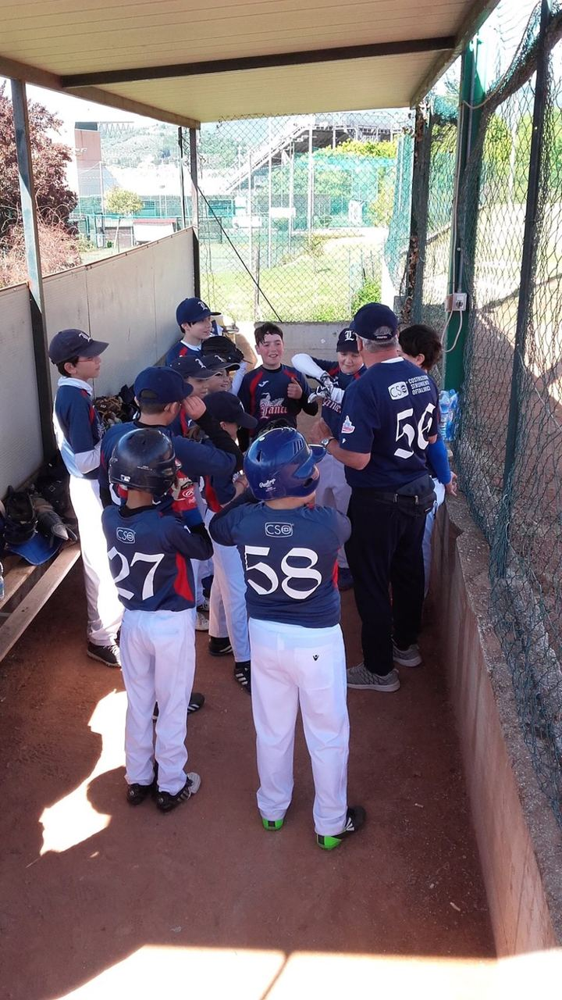

Arezzo – Lancers 14-3 
Questa i ragazzi scesi in campo: Lorenzo Gianrossi, Tommaso Lenzerini, Alberto Lopez, Paolo Manetti, Silvia Onori, Gabriele Paoli, Alessio Pellegrini, Lorenzo Sarubbi, Lorenzo Scarpulla, Alfredo Signorini, Noemi Vecchi.
Primo inning 0-0. In quanto fuori casa iniziamo in attacco. Il lanciatore n° 36 aretino non sbaglia quasi un colpo e solo Pellegrini riesce a andare in base per 4 balls ma il cambio arriva quando ha appena raggiunto la seconda base. Lanciatore Paoli, ricevitore Scarpulla. Il n° 66 viene promosso in prima base con 4 balls del lanciatore e poi prova a rubare ma Scarpulla è lesto a lanciare in seconda base e Lopez lo elimina. Il battitore n° 7 è eliminato per 3 strikes, il successivo n° 31 riesce a battere validamente ma Signorini raccoglie e lancia a Manetti in prima base: ottimo gioco di squadra, terzo eliminato e fine inning con risultato ancora inchiodato.
Secondo inning 2-0. Nostra fase di attacco molto simile al primo inning, con solo Vecchi che riesce a andare in base per 4 balls. Lanciatore Paoli, ricevitore Scarpulla. I numeri 36 e 28 battono validamente per poi, con delle rubate, giunge rispettivamente in terza e seconda base. Il n° 9 è eliminato per 3 strikes mentre il successivo è promosso in prima base per base-ball. A basi piene il battitore n° 34 è eliminato per strike-out. Il n° 2 batte consentendo ai numeri 36 e 28 di realizzare i primi due punti. Il n° 66 batte ma, con un’azione in fotocopia di quella del primo inning, Signorini raccoglie e passa a Manetti: eliminato.
Terzo inning 4-0. Il lanciatore n° 31 colpisce Onori che quindi è promossa in prima base. Lopez viene eliminato mentre Paoli batte validamente la prima palla della gara. Purtroppo la sua battuta è raccolta al volo e Onori, che cercava di conquistare la seconda base, quando l’avversario prende la pallina è fuori base: eliminata anche lei e cambio. Lanciatore Lopez, ricevitore Scarpulla. Il n° 7 batte, poi ruba e si porta in seconda. Un lancio errato di Lopez non preso da Scarpulla gli concede la terza base. Ecco che però si capisce il motivo dell’insolita imprecisione del primo lanciatore Lopez sul monte di lancio: accusa un dolore al braccio e Zalonici inizia una serie di tentativi di prove alla ricerca di un lanciatore che denuncia uno dei limiti della nostra squadra. Il primo che va sul monte di lancio è Signorini. Il n° 31 batte il suo primo vicino alla rete di recinzione, e questo non favorisce certo il morale, fa tutto il giro del diamante andando a punto preceduto dal suo compagno n° 7. Il n° 36 aretino è promosso in prima base per base-ball, poi ruba e va in seconda. Un lancio impreciso non raccolto dal ricevitore concede il punto al n° 36. Un’altra gran battuta permette al n° 9 di arrivare in terza base per poi, sul successivo lancio, decisamente errato, di arrivare a casa base.
Quarto inning 4-0. Solo Pellegrini, colpito dalla pallina, va in prima base e lì si ferma. Lopez non è in grado di sostenere neanche la fase difensiva e viene sostituito da Lenzerini, poi è Sarubbi a rilevare Gianrossi. Lanciatore Signorini, ricevitore Pellegrini. Signorini elimina il n° 8 per strike-out ma poi per 4 balls concede al n° 22 la prima base che, zoppicante, viene sostituito. Il sostituto, a forza di rubate, arriva in terza per poi, approfittando di un lancio sbagliato, realizzare il punto. A questo punto sul monte di lancio va Manetti, esordiente in gare ufficiali, ma ormai gli aretini sono padroni della gara e l’inning si chiude per la realizzazione di 4 punti.
Quinto inning 4-0. Ancora poco incisivi in attacco solo Sarubbi, colpito, e Onori, per 4 balls, raggiungono la prima base. Paoli batte di nuovo (seconda battuta personale e anche di squadra) ma Sarubbi viene eliminato prima di arrivare in terza base. Lanciatore Pellegrini, ricevitore Signorini. I lancerini, ormai demoralizzati, concedono altri 4 punti agli avversari.
Quinto inning 0-3. L’Arezzo impiega come lanciatore il n° 28, nettamente più impreciso dei suoi compagni che lo hanno preceduto. Raggiungono la prima base tutti per 4 balls, nell’ordine: Pellegrini, Scarpulla, Manetti, Signorini, Vecchi e Onori. A questi si aggiunge Lenzerini che viene colpito dalla palla. Di questi vanno a punto forzato per il riempimento delle basi Scarpulla, Manetti e Signorini. Non disputata la fase di attacco dei padroni di casa.